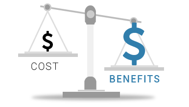

Smart contracts
Ethereum blockchain supports a wide range of decentralized applications — giving Ethereum tokens an advantage over other digital tokens. For example, Ethereum is designed to support smart contracts. In fact, because it can function as a virtual machine, Ethereum is capable of running any type of application.

Time and Cost Efficiency
Ethereum tokens are easy and cost-efficient to make. In under ten minutes, they can be created using the platform’s free and open-source smart contract development tools. And you don’t have to build a wallet: the easy-to-use official Ethereum wallet is able to hold, send and receive Ethereum tokens of any kind.
Secure and interoperable
Decentralization helps to make Ethereum secure. Because the record of transactions on a blockchain is distributed among its members, it is also highly tamper-resistant. Any attempts at fraud or manipulation can easily be detected.